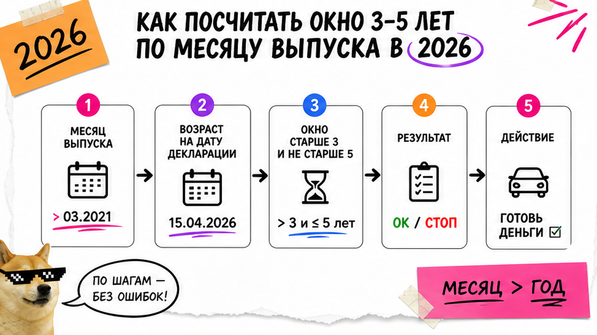
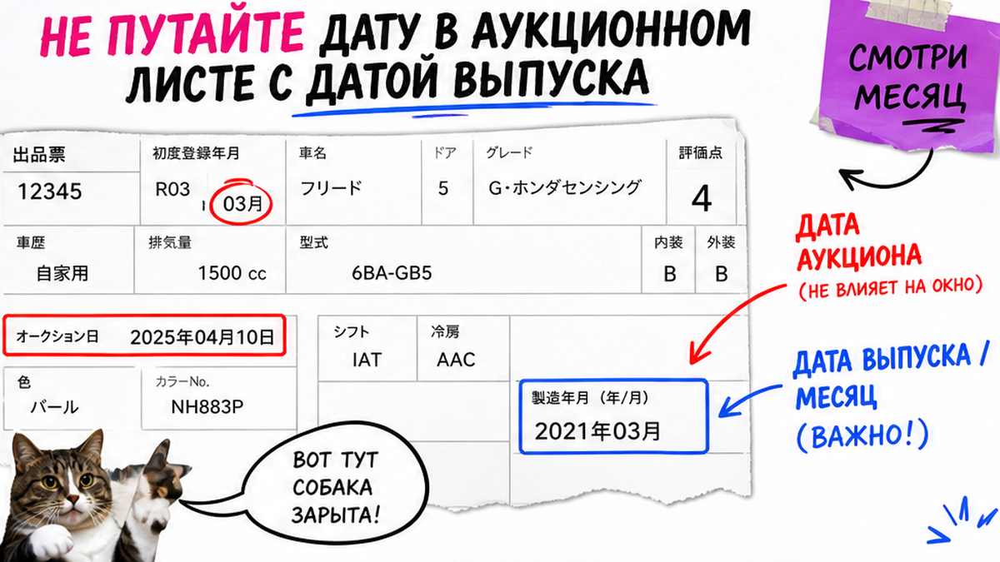

Иван увидел "Toyota 2023 за хорошие деньги", кинул депозит – и только потом открыл месяц выпуска. В листе стоял ноябрь 2023: до ноября 2026 машина ещё в зоне "младше 3 лет" с другой пошлиной. Пока лот плыл во Владивосток, окно так и не открылось. Ниже – чек до ставки: месяц выпуска, окно 3–5 лет на дату декларации, мощность в кВт, тип мотора и санкции. После гайда вы отсечёте "почти проходной" лот или уйдёте в каталог за пересчётом под ключ.
Коротко по делу: "Проходное" – не ярлык "можно ввезти", а возраст строго старше 3 и не старше 5 лет на день таможенной декларации. Год в объявлении не равен возрасту: нужен месяц выпуска. Дата в аукционном листе часто = первая регистрация в Японии, выпуск обычно на 1–6 месяцев раньше. Параллельно фильтруйте мощность (для обычного ДВС ориентир 117,68 кВт) и санкционный контур. Красный пункт – ставка на паузу.
Мы в Авто-Сейлс во Владивостоке каждый день разбираем такие лоты с новичками. Формула одна: год в заголовке – не возраст для таможни. Считать нужно на дату подачи декларации, а не на день аукциона. Логистика и очередь на СВХ (склад временного хранения) часто съедают 1,5–3 месяца – у края пятилетки это уже не мелочь.
В законе слова "проходной" нет. Это сленг рынка: машина попадает в окно старше 3 и не старше 5 лет на дату декларации. Ввезти можно и моложе, и старше – вопрос в платежах. "Можно" и "выгодно по возрастной ставке" – разные вещи.
На практике люди видят плашку "проходной 2023" и думают, что год уже проверен. Нет: без месяца выпуска и без даты оформления это рекламный ярлык, а не расчёт.
Делать: спрашивайте "на какую дату декларации считаете окно и какой месяц выпуска?" Не делать: верить слову "проходной" в объявлении без даты и месяца.

Фиксируете не день ставки, а день, когда реально подадите декларацию во Владивостоке. От этой даты отнимаете 3 и 5 лет – получаете личное окно. На конец сентября 2026 ориентир выпуска примерно сентябрь 2021 – сентябрь 2023; полностью удобный календарный год – 2022. Окно сдвигается каждый месяц.
Живой пример: лот с выпуском ноября 2023. Если декларация раньше ноября 2026, возраст ещё меньше 3 лет – другая история по платежам. Типичная ошибка – смотреть только "2023" и не закладывать путь: аукцион → фрахт → СВХ → очередь. У края пятилетки (лоты конца 2021) берите запас 3–4 месяца.
Делать: пишите дату ориентировочной декларации и месяц выпуска до депозита. Не делать: считать возраст от дня ставки или от модельного года в заголовке.
Схема возраста до ставки:
Дата декларации → окно 3–5 лет → месяц и год выпуска → правило ЕЭК (1 июля / 15-е) → запас на логистику 3–4 мес. → "можно ставить / стоп"

Аукционный лист – карточка лота с японского аукциона: оценка, комплектация, даты. Важный сюрприз: дата в листе часто равна дате первой регистрации в Японии, а не дате изготовления. Выпуск обычно на 1–6 месяцев раньше. Если брать "дату с листа" как выпуск, можно ошибиться на полгода.
Официальное правило ЕЭК (решение Коллегии №74): известен только год – берут 1 июля; известны год и месяц – 15-е число месяца. Например, в листе "регистрация март 2023", а кузов собран в ноябре 2022 – для окна это разные ответы. При сомнении до депозита запрашивают выпуск по кузову/VIN (идентификатор автомобиля).
Делать: при двусмысленности останавливайте ставку до проверки выпуска. Не делать: подставлять дату регистрации из листа как дату изготовления.
Возраст решает пошлину по возрастной сетке. Утильсбор (платёж за утилизацию авто) смотрит на объём, мощность и тип силовой установки. Два фильтра независимы: красивый "проходной год" не спасает, если мощность выше порога.
| Параметр | На что смотреть | Типичная ловушка | До ставки |
|---|---|---|---|
| Возраст | Месяц выпуска vs дата декларации | "2023" без месяца | Обязательно |
| Объём | Ориентир до 3 л для льготного сценария физлица | Кроссовер "чуть больше трёх" | Обязательно |
| Мощность ДВС | КВт из документов, порог 117,68 кВт (~160 л.с.) | В объявлении "160", в бумагах чуть выше | Обязательно |
| Гибрид / e-Power / EV | Тип схемы и свой порог мощности | "116 л.с." у последовательного гибрида | Стоп до пересчёта |
Знакомый Ивана взял Harrier "потому что все везут": по возрасту окно сходилось, а в карточке около 171 л.с. – льготного сценария по мощности уже нет. Другая история – последовательный гибрид (e-Power): порог льготы другой, чем у обычного бензина. Не сравнивайте "лошади" из рекламы с чужим гайдом про ДВС.
Делать: выписывайте кВт и тип мотора из документов лота. Не делать: выбирать модель "как у всех" без проверки мощности и схемы гибрида.
С августа 2023 Япония ограничила прямой экспорт в РФ ряда конфигураций: ДВС свыше 1,9 л, полные гибриды и электромобили. Купить часто можно через третью страну – но срок и бюджет другие. Если обещают "просто чуть дороже фрахт" без маршрута – это риск.
Новичку проще стартовать с прямой несанкционной конфигурации: бензин до 1,9 л, возраст в окне, мощность в пороге. Если лот санкционный – до ставки должны быть ясны маршрут, сроки и ответственность по этапам.
Делать: до депозита спрашивайте маршрут JP→РФ или через третью страну. Не делать: думать, что санкции "только про цену доставки" и не влияют на календарь окна.
Сведите всё в один лист. Зелёные пункты – можно просить расчёт под ключ. Хотя бы один красный – ставка на паузе. Готовых сумм пошлин в статье нет: цифры живут в расчёте по конкретному лоту.
Делать: идти за расчётом с готовыми датами и кВт. Не делать: просить "сколько выйдет" без месяца выпуска и типа мотора.
Критерий успеха простой. У вас мини-чек по лоту: дата выпуска с запасом до оформления, мощность и объём в рамках сценария, тип мотора понятен, маршрут несанкционный или осознанный через третью страну. Красный пункт – депозит не кидаете. Зелёные – идёте за пересчётом под ключ, а не угадываете по году в заголовке.
Материал проверен: Редакция Авто-Сейлс – эксперты по авто под заказ из Японии, Кореи и Китая (Владивосток).
Достоверность: возрастное окно сверено с обзорами 2026 (Onteco, JapanExport55, AZWAY, SferaCar); момент выпуска – с порядком ЕЭК №74 (ConsultantPlus); пороги мощности – с разборами Drom и vc.ru Decoded; санкции – с сообщениями РИА о мерах Японии с 09.08.2023. Итоговый расчёт по лоту – только в каталоге, без статичного калькулятора в тексте.
Сленг: возраст старше 3 и не старше 5 лет на дату таможенной декларации. Ввезти можно и другой возраст – меняются платежи. До ставки зафиксируйте месяц выпуска и дату оформления.
Окно сдвигается помесячно. На конец сентября 2026 ориентир выпуска примерно сентябрь 2021 – сентябрь 2023; удобный полный год – 2022. Возьмите свою дату декларации и отсчитайте 3 и 5 лет.
Сначала фильтр по месяцу выпуска. Затем отсеките лоты выше порога мощности и санкционные конфигурации без понятного маршрута. Shortlist несите на расчёт в каталог.
Модельный год и месяц выпуска часто расходятся. Дата в аукционном листе может быть датой регистрации, а не изготовления. Запросите месяц выпуска до депозита.
Считайте кВт из документов. Порог для обычного ДВС – 117,68 кВт. Если выше – пауза и пересчёт сценария до ставки, не после СВХ.
Прямой экспорт из Японии в РФ для ряда таких конфигураций ограничен с августа 2023. До ставки выясните маршрут через третью страну, сроки и бюджет – или выберите прямую несанкционную комплектацию.
Соберите чек-лист лота (месяц выпуска, кВт, тип мотора, маршрут) и передайте на расчёт: каталог avto-sales125.ru или Telegram @avtosales125. Сначала факты по лоту, потом цифры.